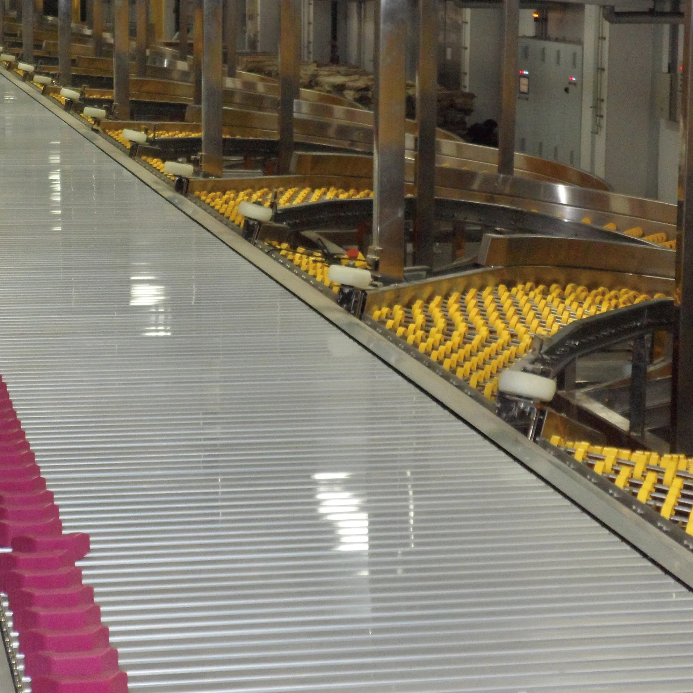

A sorter that diverts parcels to destinations during conveying. Configuration is proposed after reviewing parcel types, destination count and conveying conditions.
Configuration, performance, power supply, temperature range and installation conditions for models offered in Japan are confirmed for each project.
Ask about this productBack to products →Product features
Selection for your application
We review peripheral equipment and operating conditions before making a proposal.
Specifications & selection
| Selection conditions | Confirmed individually for parcel shape, weight, throughput and destination count |
|---|
Configuration, performance, power supply, temperature range and installation conditions for models offered in Japan are confirmed for each project.
What to confirm before implementation
Please provide minimum and maximum parcel dimensions and weights, required throughput, destination count, available space, power supply, temperature range and existing equipment interfaces. Maintenance scope and installation steps are also confirmed individually.
Request specifications & quotation